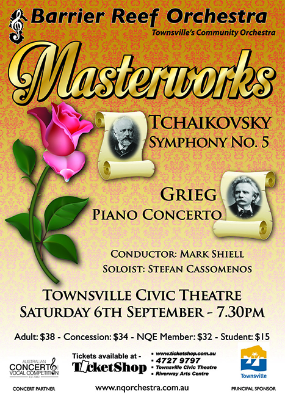

Guest Conductor:
Mark Shiell

Soloist:
Stefan Cassomenos
| Conductor: | Mark Shiell |
|---|---|
| Soloist: | Stefan Cassomenos (Runner up: 2013 Australian Concerto and Vocal Competition) |
| Program: | |
| Edvard Grieg: | Piano Concerto in A minor, Opus 16 |
| Pyotr Ilyich Tchaikovsky: | Symphony No. 5 in E minor, Opus 64 |
| Rehearsal Conductors: | Ben Fixter, Suzanne Darrigan, Andrew Ryder |
|---|---|
| Concert Master: | Stephen Frewen-Lord |
| Violin 1: | Stephen Frewen-Lord; Margot Doherty; Kimberley Riskas; Jasmine Martin; Tracey Cook; Satashi Siratsuchi; Carla Littlefield, Fiona Hu |
| Violin II: | Alexandra Gorton; Jess Regan (Melbourne); Julia Maurus (Cairns); Sophie Gregory; Suva Leitch; Bianca Bachiella; Erin Darrigan |
| Viola: | Danielle Bijl; Cortney Husodo, Aidan Fitzgerald; Emily Matthews; Bethany Waller |
| Cello: | Rachel Lind; Caroline Arlett, Margaret Loftus; Samuel Yick; Skye-Tara Lewis; Rachel Hill; Zali Clark |
| Double Bass: | Phil Honey; Olivias Adcock; Maureen Wallace, Emma Wooton |
| Flute/Piccolo: | Manuela Wellbach |
| Oboe: | Bernie Girard (Brisbane); Georgina Kanowski |
| Clarinet: | Jacinta Payne; Rianta Belford |
| Bassoon: | Carl Bryant; Helen Land |
| Horn: | Andrew Ryder; Adan Gabriels (Brisbane); Suzanne Darrigan; James Bradley (Brisbane) |
| Trumpet: | Derek Larsen; Claire Dickson; Seawong Jang. |
| Trombone: | Dylan Troyahn; Haong-Tuong Nguyen-Hao; Mark Land |
| Tuba: | Patrick Parker |
| Timpani: | Noel Price |
Guest Conductor:
Mark Shiell
Soloist:
Stefan Cassomenos